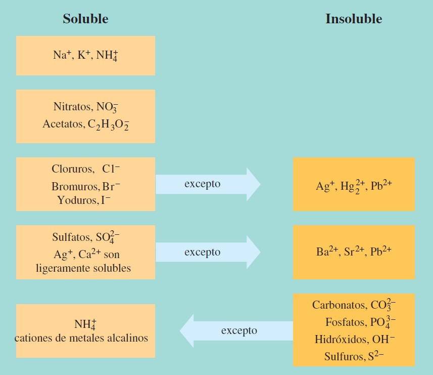

El término solubilidad describe la cantidad de una sustancia (soluto) que se disolverá en una cantidad especificada de otra sustancia (disolvente), en las condiciones establecidas. Por ejemplo, 36.0 g de cloruro de sodio se disuelven en 100 g de agua a 20°C. Decimos entonces que la solubilidad del
NaCl en agua es 36.0 g/100 g de H2O a 20°C. La solubilidad se utiliza a menudo de una manera relativa. Por ejemplo, se dice que una sustancia es muy soluble, moderadamente soluble, poco soluble o insoluble. Aunque estos términos no indican con precisión la cantidad de soluto que se disuelve, se
utilizan con frecuencia para describir cualitativamente la solubilidad de una sustancia.
Otros dos términos utilizados para describir la solubilidad son miscible e inmiscible. Los líquidos que son capaces de mezclar y formar una disolución homogénea son miscibles; aquellos que no forman disoluciones o son generalmente insolubles en otro son inmiscibles. El alcohol metílico y
el agua son miscibles uno en el otro en todas las proporciones. El aceite y el agua son inmiscibles.
